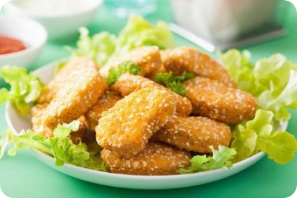

Nugget Jamur Tiram
Sulit > 1 hari
Bahan-bahan
- 1 kg jamur tiram (cuci bersih)
- 200 gram tepung terigu
- 200 gram tepung maizena
- 4 butir telur ayam
- 5 butir bawang merah (haluskan)
- 7 butir bawang putih (haluskan)
- 2 sdt merica bubuk
- Garam secukupnya
Cara Membuat
- Rebus jamur tiram dalam air mendidih selama 10-25 menit. Angkat dan tiriskan. Peras jamur sampai air di dalamnya keluar semua.
- Campurkan gilingan kasar jamur tiram dengan tepung terigu, tepung maizena, bawang merah halus, bawang putih halus, dan telur. Aduk sampai merata.
- Tambahkan garam dan merica. Aduk sampai merata.
- Tuangkan adonan ke dalam loyang yang sudah diolesi minyak atau mentega. Kukus selama 10-15 menit.
- Setelah matang dan dingin. Lepaskan dari loyang dan potong sesuai selera. Hasil yang lebih baik jika dimasukkan ke dalam kulkas selama 1 hari atau 1 malam.
- Sebelum digoreng, masukkan nugget ke dalam kocokan telur dan gulingkan ke dalam tepung panir sampai merata dan semua permukaan tertutup. Goreng hingga matang kecokelatan.
- Nugget jamur tiram siap disantap.
|